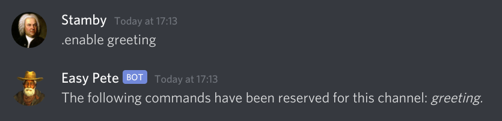
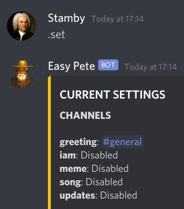
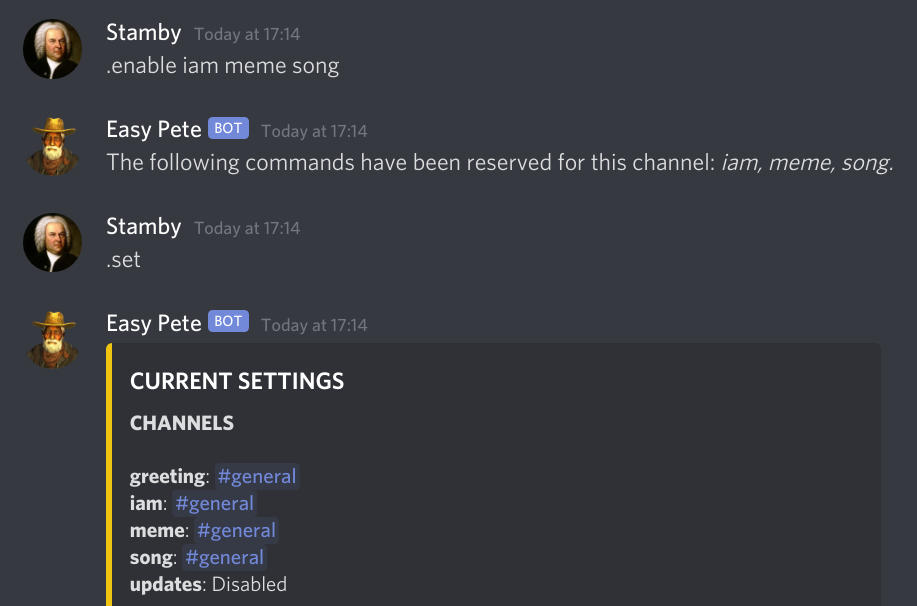
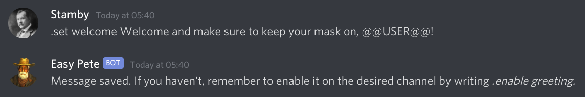
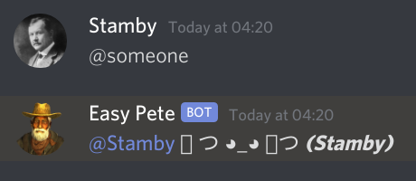

Easy Pete is a simple, multi-purpose Discord bot that can greet users when they join a server, create roles on request and remove those roles if they are no longer owned by any users, depending on settings. It has the ability to delete a group of messages with a command and other features for entertainment, as well as a word filter. All its features can be customised, and this guide will attempt to briefly explain how to do that.
A substantial amount of help can be found through .help, the help for users in general, and .admin, for people who manage a server. In addition, every setting is changed by two commands: .enable and .set. Learning how to use these commands is all that is needed to make all the bot's features to your preference.
Per-Channel Settings
The first step is to add the bot to a server through this link. It is important that we give the bot as many permissions as it needs so that all commands may work.
You can run .set after adding the bot to see all its settings.

We can see that some values at the top say Disabled, which are the features that can be enabled on a channel basis through the .enable command. At this point you can enable welcome messages by doing the following:
If we run .set again, we can check that the greeting feature is now enabled for this channel:
In the same manner, .enable can be used to allow .iam, .meme and .song to work on a certain channel. We can enable the three of them at once, like the picture shows:
The .Set Command
What we did first on this guide was to enable server greetings, but we did not tell the bot what message it should say whenever somebody joins the server. Therefore the message will be the default one. If we want to change this greeting, .set comes into play:
We just set the welcome message. We might want to also change the goodbye message sent when somebody leaves by running .set farewell followed by the message in question.
.Set can also change the way the bot replies to other commands, like .iam. We invite you to try it out for yourself with the help of .admin and our support server, linked at the bottom of this page. However, we will use @someone as a last example.
The @someone command mentions someone at random on the server. It can be fun for some, but annoying for others. If you prefer not having it, you can run the .set command as in this picture:

Indeed, the second time there was no reply. This is the way to turn it off.
Features
Aside from the ones previously described, these are the bot's features:
Word Filtering
Word filtering can be enabled through .set filter_profanity, .set filter_mass_mention and .set filter_invite followed by one of these values:- 1 to warn users without doing anything else.
- 2 to warn them before deleting their messages.
- 3 to delete their messages without warning.
- The default value of 0 does nothing.
Role Self-Assigment
The .iam command will let users add themselves roles. It can be affected by the following variables:- The bot can only add a role that is below its own on the role list. You will need to drag Easy Pete's role above any role you intend it to assign to other users on Server Settings, Roles.
- As a user should not be able to give himself more permissions, .iam also requires that any role that is to be added by users should have no special permissions added to it, meaning all its permissions should be switched off on Server Settings, Roles.
- .Set role_create true will allow Easy Pete to create a role automatically before assigning it to a user. The role will be hoisted and carry a random colour. Likewise, setting said variable to false will prevent this from happening, instead saying the role is not available.
Role Clean-Up
.Set role_cleanup true will allow any roles to be deleted as soon as no users are detected to be carrying them. Because Easy Pete does not save which roles it has created, this affects any role whether it has been created by the bot or a user. It will be triggered for two reasons:- A role has been removed from a user, and the role is no longer used.
- A user has left the server, and some of his roles are no longer used by other members.
Memes and Meme Filtering
The command .meme, which can be enabled by .enable meme on a channel, will send memes suitable for all users by default; however, .set meme_filter false will allow “NSFW” memes to be sent along with normal memes. The meme channel needs to be marked as NSFW on Discord. If the filter is set to false and the meme channel is not marked as such, memes will still be filtered.“Pruning” Messages
One can remove a group of messages by running .prune, followed by an amount. It can be run by those having Manage Messages permission, and disabled by .set max_deletions 0.Changing the Prefix
While the default prefix is a dot (.), this can be changed to any prefix of your choice. To do this, run .set prefix followed by the prefix to use. It must be one symbol. To check the bot's current prefix, just mention it.
Congratulations, this is all there is to know about the bot. For a concise explanation, you can always turn to .admin. If you would like to suggest any changes, please create a Github Issue following the link to source code at the bottom of this page.
Privacy
The bot does not log or save to our servers anything that isn't strictly necessary for its own function, and it will delete all information associated to a server as soon as it is removed from it. By kicking and readding the bot, you can restore all settings to their default values. Additionally, the bot's source code is available on Github so you can see exactly what it does.
More Links
If you like the bot, we will really appreciate that you recommend it to other people who might also enjoy it. You can also join the Discord server to hang out with other users of the bot, suggest new features and ask for help if needed.